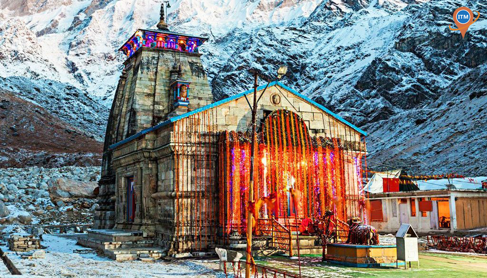

Kedarnath
 4.5
4.5
 -13 C
-13 C
 8 Hr
8 Hr
Description
Reviews
About
Kedarnath is a town in the Indian state of Uttarakhand and has gained importance because of Kedarnath Temple. It is a nagar panchayat in Rudraprayag district. The most remote of the four Chota Char Dham sites, Kedarnath is located in the Himalayas, about 3,583 m (11,755 ft) above sea level near ChorabariGlacier , the source of river Mandakini.
6000 ₨Person